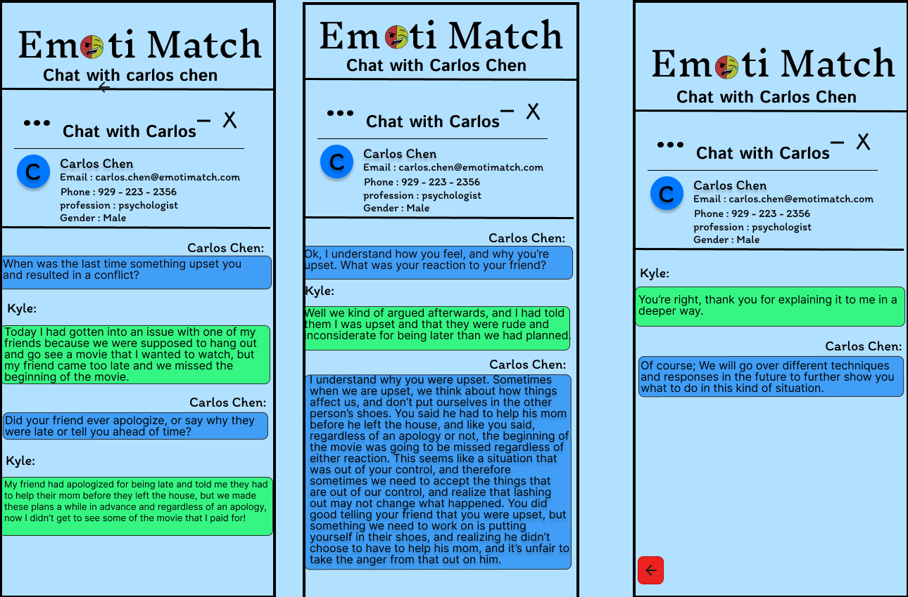
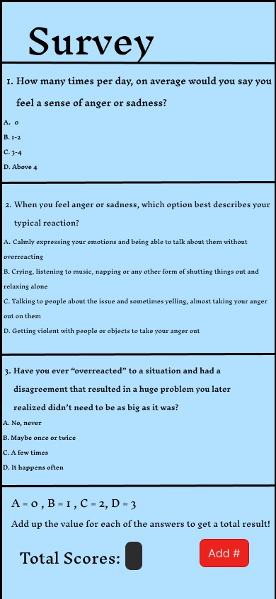
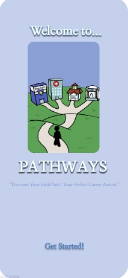
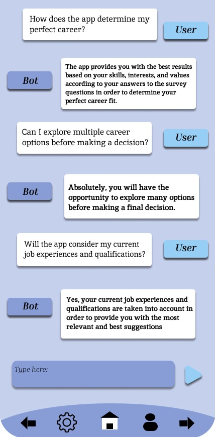
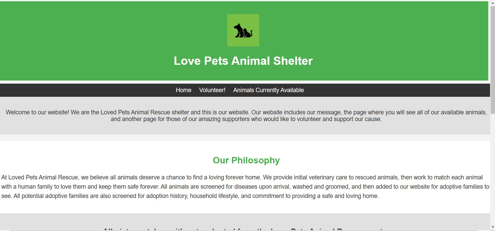

Emotimatch was a concept developed by my group for the congressional app challenge meant to help teens gain more control over their emotions and connect with people similar to them in order to help each other. This project came out extremely well, and I loved the concepts of the app that we incorporated into our figma's design. A struggle of this challenge was being faced with limitied time, but we were able to tackle the challenge using the innovative ideas we came up with along the way.
This was something I was personally proud of myself for. When trying to introduce a mentor feature to our app, we were tasked with the challenge of being able to paint a vivid picture of how it would work. Thankfully, I was able to create what I believe was a very thorough and in-depth analysis into our mentors and how they converse with the users of our app.
Lastly, another design by myself, our app's survey. This is the foundation of our app, and tells users exactly where they are and what they need to work on. In addition, this survey can be repeated in order to measure progress in an effective way. These qualities made our survey one of the highlights of our app.
Pathways was made last year, for our first congressional app challenge. You can tell the increase in quality, as a result of the major difference in time we had with this project. The goal of this app was to help teens or young adults determine where they want to go with their career, and make it easy and accessible for them to find their dream job. We made our app very interactive and even included applications, a job fair map, and a customizable profile.
This is an example of a user interaction with our chatbot. The chatbot was our app's biggest feature, as it was innovative and not present in other competitor's apps. This was one of the best things we did for our app that made it stand out and be unique. Overall I was very proud of how well we did with our app and how far we came.
 Click here to be taken to website!
This is a website I made for the Loved Pets Animal Shelter. I included everything the website wanted, including their personal message and images of some of their
adopted pets on the homepage. In addition, there is a page for volunteers to sign up and the page where users can see all of the pets currently available in the
store. Check it out yourself if you're interested!